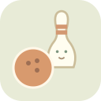

كرة صغيرة… وفرحة تتدحرج
بستان البرتقال
نبدأ جولة جديدة؟ ستبقى الجولات الأخرى محفوظة.
لكل مجموعة رميتان. نستكشف، ونجرب مرة أخرى.

نبدأ جولة جديدة؟ ستبقى الجولات الأخرى محفوظة.
لكل مجموعة رميتان. نستكشف، ونجرب مرة أخرى.
ابدأ بزر واحد للصغير. يمكن الإشارة إلى ما سقط وما بقي دون سؤال أو اختبار. لكل لاعب ثلاث مجموعات، وفي الشراكة يكون اللاعب الثاني ضيفًا على الجهاز نفسه. الأرقام وصف للعب وليست تقييمًا للطفل. اختيار مستوى أو عدد لاعبين آخر يستعيد جولته المستقلة.